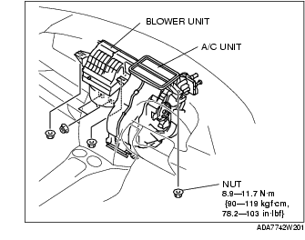
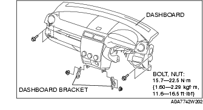

Dashboard removal/installation
1. Disconnect the negative battery cable.
2. Remove glove compartment No.1. (See GLOVE COMPARTMENT NO.1 REMOVAL/INSTALLATION.)
3. Remove glove compartment No.2. (See GLOVE COMPARTMENT NO.2 REMOVAL/INSTALLATION.)
4. Remove the console. (See CONSOLE REMOVAL/INSTALLATION.)
5. Remove the meter hood. (See METER HOOD REMOVAL/INSTALLATION.)
6. Remove the instrument cluster. (See INSTRUMENT CLUSTER REMOVAL/INSTALLATION.)
7. Remove the column cover. (See COLUMN COVER REMOVAL/INSTALLATION.)
8. Remove the lower panel. (See LOWER PANEL REMOVAL/INSTALLATION.)
9. Remove the steering shaft. (See STEERING WHEEL AND COLUMN REMOVAL/INSTALLATION.)
10. Remove the A-pillar trims. (See A-PILLAR TRIM REMOVAL/INSTALLATION.)
11. Remove the front scuff plates. (See FRONT SCUFF PLATE REMOVAL/INSTALLATION.)
12. Remove the front side trims. (See FRONT SIDE TRIM REMOVAL/INSTALLATION.)
13. Remove the side panels. (See SIDE PANEL REMOVAL/INSTALLATION.)
14. Disconnect the dashboard harness connectors.
15. Remove the driver-side door. (See FRONT DOOR REMOVAL/INSTALLATION.)
16. Remove the caps and the bolts.

17. Remove the installation nuts for the blower unit and the A/C unit.

18. Remove the bolts and the nuts.

- • Removing the dashboard without supporting it can be dangerous. The dashboard may fall and injure you. Always perform the following procedure with at least another person.
19. Pull out the support pins from the body, then remove the dashboard.

20. Remove the dashboard through the front driver-side door opening.
21. Install in the reverse order of removal.